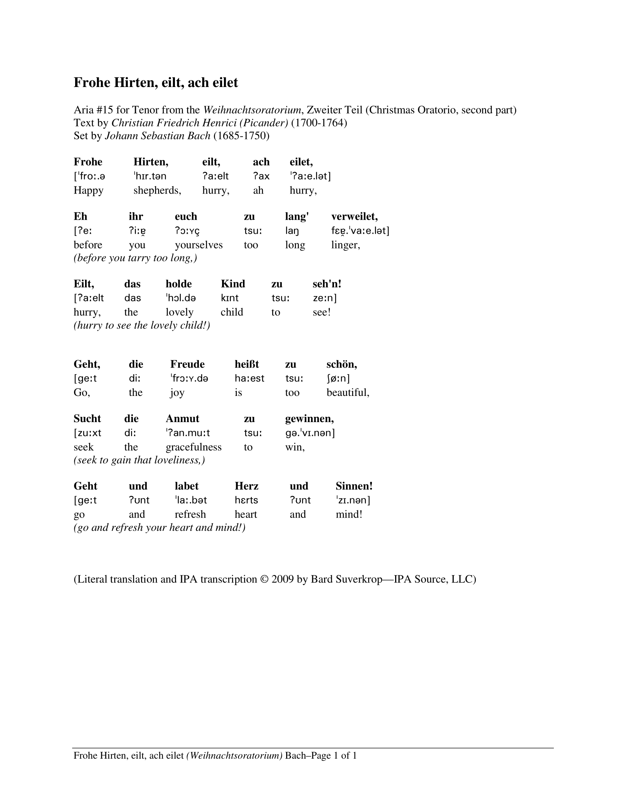
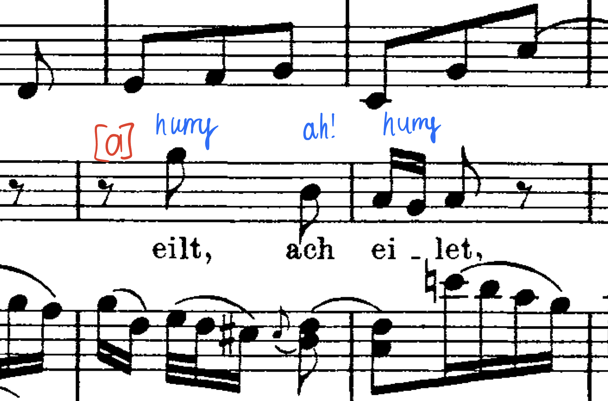

Introduction

Why did I make this?
As the Harvard Choruses continue making a push to feature students as soloists more frequently, many more singers will go through this same process of learning and performing a piece in similar large-scale performances. My hope is for this web application to serve as an example of how one can successfully go about preparing an aria. For example, if a chorister is unsure about what a timeline for learning a piece could look like, they could use this as a starting point and adjust it to their needs for the specific piece. Moreover, if someone does not know how to be methodical in approaching learning a difficult piece to a very high level, this can serve as inspiration for different topics that make sense to isolate throughout the journey. As long as this helps even a singular person gain clarity in their process for preparing a piece at some point after I have graduated, my goal will have been accomplished.

Who am I?
I am Xavier Evans, a senior at the college studying Computer Science and Linguistics. Originally from the small town of West Milford in North Central West Virginia, I have been singing for my entire life. I am a fourth-year member and former president of the Harvard-Radcliffe Collegium Musicum. In our 2021 performance of Handel’s Messiah, I was the soloist for Comfort ye my people and Every valley shall be exalted. Last year, I had the opportunity to sing the tenor aria Was willst du dich, mein Geist, entsetzen in Collegium’s performance of Bach’s Liebster Gott, wenn werd ich sterben, BWV 8 and to sing alongside professional soloists for Duo Seraphim from Monteverdi's Vespers (1610). The newest addition to my singing bio is precisely what I will be discussing here today: Frohe Hirten, eilt, ach eilet from Bach's Christmas Oratorio.

Who helped me?
Charley Blandy was the teacher with whom I worked the longest during my college career. He, unfortunately, had a change in career plans and is no longer working for the Holden Voice Program, so I stopped taking lessons with him in Spring 2022. I still credit him for most of the development I have seen in my voice up until this point since we worked together for six semesters. This year, I started working with the illustrious Christopher Sierra. They are an absolute ball of energy, and no one would be a better pick to fill Charley's enormous shoes. They gave me additional guidance as I learned this piece, even though we didn't have time for many lessons this semester. Additionally, I was privileged enough to have two coaching sessions with guest artists hired by the Holden Voice Program: Beth Marshall and Pam Dellal. It was vital to get fresh eyes on this piece since I had gotten so comfortable with it after two months of hard work, and their insights reinvigorated the aria and got me excited to make the final push to concert day. I am indebted to these four teachers for their invaluable guidance, and I could not have delivered as stellar a performance without them.
The Nitty-Gritty
How did I sound?
Before we get into the details, take a listen to my performance! At the risk of biasing your listening experience, I must say that I am incredibly proud of the way this turned out! I was feeling incredibly unwell the entire day leading up to the concert due to receiving my COVID booster the night prior—so unwell that I decided to rest instead of going to the final rehearsal right before the concert. I rolled out of bed with just enough time to get dressed and walk onto the stage when I arrived at Sanders, and I am so glad that is what I did! I felt more rested than ever going into a concert, and my voice felt as fresh as a daisy and as light as a cool summer breeze. I knew the solo was going to go to plan from the first note the orchestra played and especially when I walked out to begin singing. This self-assurance in itself is not to be underestimated in its effect on the quality of the performance, and I attribute this to my thorough preparation. I hope this confidence and, because of it, the ability to focus on musicality and being present translates well through the recording.

What did my learning timeline look like?
My key to success in learning this piece was having a solid plan before ever singing the first note. Although a bit excessive, perhaps, at the beginning of the semester, I created an excruciatingly detailed flow of how I would learn the piece over the coming months. I will start by presenting a rather general scaffold of the timeline and then elaborate on each of the phases.
-
August 2022Phase I: Listening
-
September 1–15, 2022Phase II: Stumble Through
-
September 16–30, 2022Phase III: Phonetics
-
October 1–15, 2022Phase IV: Semantics
-
October 16 – December 3Phase V: Refinement

What was my detailed work breakdown?
Now, I will proceed to give a much more detailed breakdown of my process, and I will do so by describing each of the five phases. This likely goes without saying, but my process for learning this piece was like a funnel. In the first two phases, there was not much structure, and there was certainly no science involved; it was just a time to get really comfortable with the piece and have it in my bones before I start whittling away at it in the remaining phases. In the remaining phases, I took a scientific approach to analyzing the text (putting my Linguistics degree to work) and refining my vocal technique.
-
Phase I: Listening
This phase was relatively effortless considering the fact that I would be listening to music anyway, even if I weren't preparing this piece. It was as simple as shuffling it into my playlist and having it on repeat anytime I was doing an idle task like taking a shower, doing work for my internship, walking on the treadmill, or driving to the store. My favorite recording follows.
-
Phase II: Stumble Through
Then, since I was extremely comfortable with the piece after listening to it on repeat for at least thirty hours, I was ready to take a stab at singing it myself somewhat seriously. Obviously, I didn't survive an entire month without making a peep, but I did not go into a practice session with the score in front of me ready to work on it in a rigorous capacity or in any capacity, for that matter. Until then, it had just been "shower singing," so this was an exciting change of pace.
At this point, there was still no real rhyme or reason. I would simply work through the piece from the beginning to the end, taking note of tricky passages, circling intervals and entrances that I predicted would be difficult, and other things of that sort. I was still not taking any action to resolve any of the complications that arose, and I was certainly not pronouncing the German completely correctly. Again, since I had created a timeline, I knew that in due time, I would tackle all of these categories, so there was no need to rush and divert my focus and energy. My favorite technique for this phase was to sing the piece straight through, mistakes and all, with an accompaniment track on YouTube. This gave me a sense of what the orchestra would sound like behind me from early on in the process, and this helped me avoid the situation of being stunned by what I was hearing (or what I wasn't) during concert week. My accompaniment track of choice follows.
Phase III: PhoneticsThen, since I had become very comfortable with the piece and could, at the very least, get through it from start to end, I was ready to start woodshedding. For me, notes come much more naturally than lyrics, particularly when the piece is in a foreign language that I do not speak, like German. Additionally, my technique is compromised when, because of uncertainty and its resulting tentativeness, I cannot put my all into the production of the text. Moreover, if I am making important decisions about vowel placements for certain notes, especially in tricky parts of my register that need some negotiating, it is detrimental to make those accommodations based on a pronunciation that isn't even accurate. For these reasons, I made it my mission to nail the pronunciation before getting deep into resolving some issues with my technique.
My key to getting the pronunciation perfect in any foreign language is the International Phonetic Alphabet, abbreviated as IPA. This is a standard system based on the Latin alphabet to, ideally, represent all speech sounds in all languages throughout the world. This is an ambitious goal, especially for languages that are distant from Indo-European languages, but it works quite well for a language like German. So, I bought the IPA transcription of the piece and got to work making pronunciation notes in my score. The IPA transcription follows.
This method works well for me as I study linguistics. Not everyone is familiar with the IPA, but since it is as comfortable as a language like English or Spanish that I speak fluently, I feel safe in using it as my primary pronunciation assistance tool. For others, it might make more sense to write English approximations or other queues, but since I want to avoid corrupting my German pronunciation with any trace of English, I avoid this and go straight to the source with IPA.
Phase IV: SemanticsThen, my pronunciation was impeccable, but I didn't understand a single word I was singing—okay, maybe ein, das, and Kind. So, my next priority was looking at translations from various sources and trying to create a conglomerate interpretation of this text. Once I understood the phrases generally, I proceeded to translate each word individually. This is tedious, trust me, but it is much easier to sing intentionally when you know which words in the phrase contribute to which parts of the translation you see in front of you. This is the problem with translations sometimes, even when they claim to be strict. Occasionally, some artistic interpretation sneaks in and there is no longer a one-to-one mapping from German to English. For this reason, it is essential to make certain what every single word means. This goes as far as understanding inflections of verbs and why they are conjugated in the ways that they are. Often, the entire meaning transforms when you see what the verb is actually referring to, but this could be ambiguous from the dictionary form of the verb.
I quite like the translations provided in the IPA transcription as it includes not only the artistic interpretation but also the word-by-word literal translation. This was enough to copy down a translation in my score, but I looked to other sources just to get more perspectives. This was the translation provided by Pam Dellal.
Happy shepherds, hurry, ah hurry, before you delay too long, hurry to see the lovely Child! Go, this joy is so exquisite, seek to achieve this loveliness, go and delight heart and senses!
Because this was so remarkably similar to the translation provided in the IPA transcription, I felt secure that I had triangulated and found an accurate translation. An example of the translation in my score, along with an IPA pronunciation tip, follows.
Phase V: RefinementThen, I had a general sense of the piece and could sing it from top to bottom; I had an accurate pronunciation; and I had a deep understanding of the text, informed by multiple translations. The final step was to clean up my technique and make revisions to add that professional polish to my performance. One of the major considerations during this time was my breathing and designating locations for emergency breaths (which became permanent breaths since they sounded so musically appropriate). Another focus was space in the oral cavity and not letting my style of singing for my a cappella group corrupt my classical singing. This corruption manifested in the flattening and spreading of my vowels, resulting in some strain and reduced resonance. Finally, I reevaluated the virtuosic coloratura sections and essentially relearned them. Initially, I learned them as modular structures, identifying the common building blocks and linking them together. Then, however, I decided to perceive them instead as larger arcs that span from the onset to the release, even if there are repeating subunits. This helped the melismas flow better and have direction, and while I will let you be the judge, I believe this made for an exhilarating performance.
The best examples of the implementation of these technical fixes are the two coaching sessions I had. We resolve many problems with my vowels and breathing in the first session, and in the second, we make minor tweaks to those and double down on several of them. They are the best representations of my growth over the semester as they are a month and a half apart, the first in early October and the second a week before the concert in late November.
First Coaching
Second Coaching

How did my practice hours change over the semester?
Now that you better understand my process, I want to talk a bit about what the time committment for preparing a piece like this looks like. It was certainly a greuling journey, and it ended up being more than eighty hours of dedicated work in total. The time committment certainly fluctuated throughout the semester, but it was quite manageable since it was evenly distributed. See for yourself.
It is clear that my practice hours increased on average throughout the semester. There are two main peaks that I sensed throughout the semester and also observe in the graph: before the audition and concert week. It is clear in the line chart that in mid-October and late November there are peaks in practice hours because of the important events related to this solo.

Reflections

What are my takeaways from this experience?
Learning this aria was the single most rewarding artistic experience in my Harvard career and perhaps my life. I think this is primarily because of my diligence in documenting my process for learning it. Usually, I let the process develop organically. I show up to my voice lessons and listen to what my teacher has to tell me. I sing through the piece more than I should in my practice sessions and don’t resolve the problem spots in the most optimal or intentional ways. For this project, since I knew going in that my exact method down to the finest of details would be broadcast for the world to see, I knew I should be more disciplined than usual. With this mindset in place, I could see so much more progress, and I attribute that not only to the fact that I was looking for it more regularly and more carefully but also because it helped me to be so meticulous. In my trial and error during this experience, I developed an effective scaffold for learning a piece that I can now carry forward to all future projects; I can let every new piece I visit inform the method, and it will continue to evolve over time, get more and more efficient. On a more personal note, this built my confidence significantly. By being thorough and deliberate about my work and reflecting on it and compiling it in such a thorough and unique way, I demonstrated to myself that I had put in hard work, and through this hard work, I can reliably create a product that I am proud of every single time. This confidence motivates me to keep learning new pieces, challenging myself to be even more efficient and thorough and to create products of even higher quality. I am excited to do so as I enter my final semester at Harvard and start crafting my senior recital.

What are my recommendations?
I learned so much throughout this journey, and there are a few things that I would like to highlight to you and my future self for when we find ourselves in a situation of learning a piece like this in the future. First, I would encourage you to focus on the text early and prioritize the natural stress of the text. I resolved many errors in my technique when I let go and let the text guide my way. It feels excessive to speak the text over and over again with dramatic emphasis on the stressed words in the phrase, but this was necessary to sort out the musical phrasing and breath management issues. I would also recommend approaching the coloratura sections more urgently than I did. I glossed over them until the final week and didn’t realize I was since they were passable. This is a common problem for people who sing pieces of this difficulty level since we are good enough to stumble through it and still make it sound decent. This is where we must be incredibly observant and hold ourselves accountable. When I finally noticed that I didn’t have as strong of a grasp on the runs as I thought, I broke them down into modular sections and sang them with several different rhythms to tease out the inconsistencies with certain intervals. Then, I was able to perform them with absolute confidence on concert day, but it was truly a close call. Additionally, I had to overcome the habit of closing vowels in the top part of my register just because I was singing in German. In many cases, I was too religious about the pronunciation when I needed to go back to fundamentals and use the proper vocal technique, even if that meant opening up vowels or making modifications to make it more effortless to sing. I would also recommend that you focus on the vocal technique above all. Text is important and it can even improve technique when used to its full potential, but it can also obstruct. The latter should never be the chosen option, and opening up to a neutral vowel can sometimes get the vocal apparatus in the right place before massaging the vowel into this space. These are just a few tips and tricks I would give you and myself if I were to do this all again.
Thanks for reading!
I hope you enjoyed learning about my process for preparing this Bach aria. Again, my objective here was to give you a model for learning a piece that proved to be quite successful for me. If that was helpful in any way, than my goal was accomplished. If you have any lingering questions, feel free to contact me, and I will be happy to discuss further. Thanks again for reading, and happy learning!